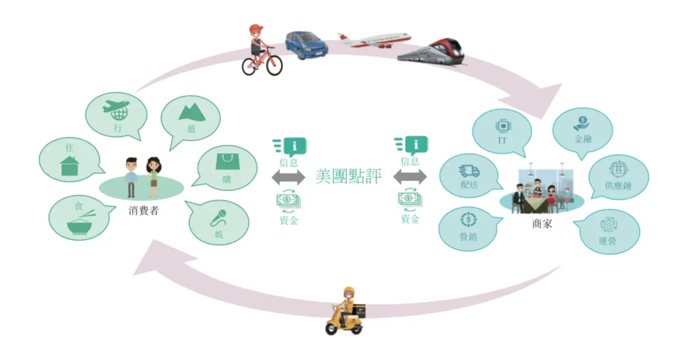
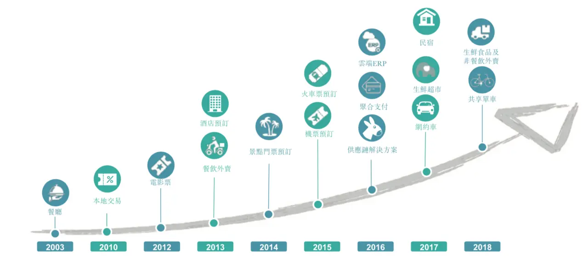
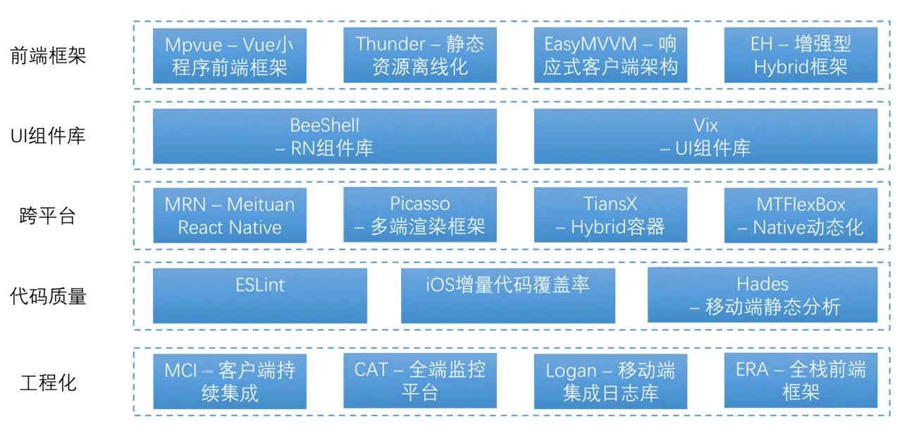
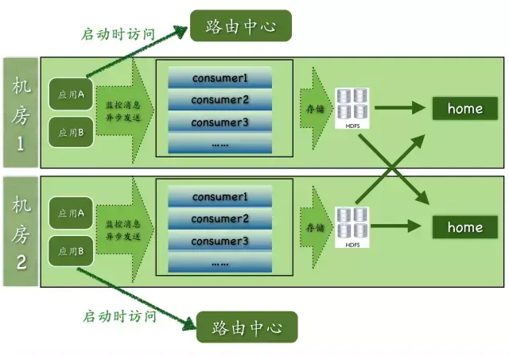
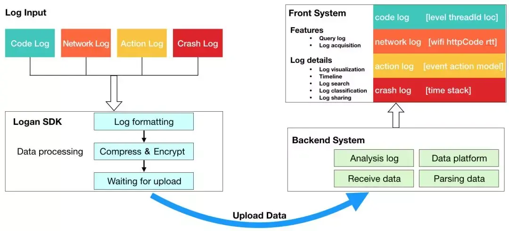
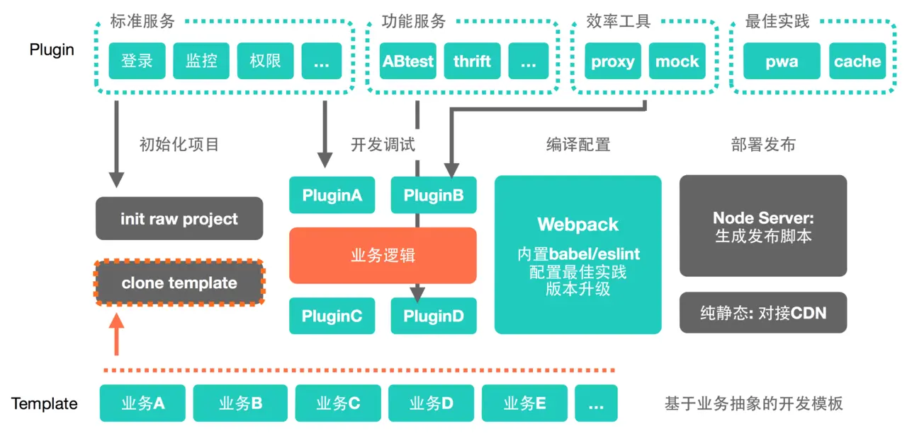
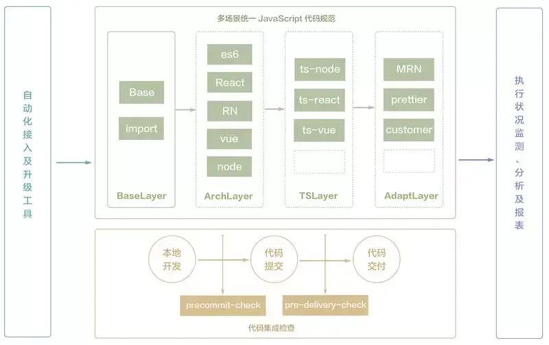
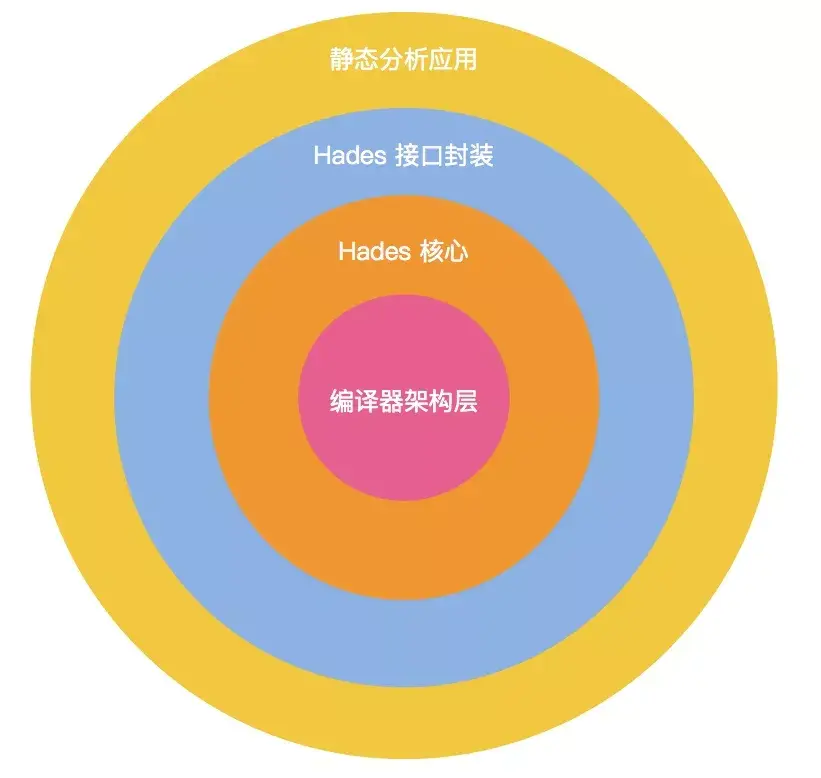
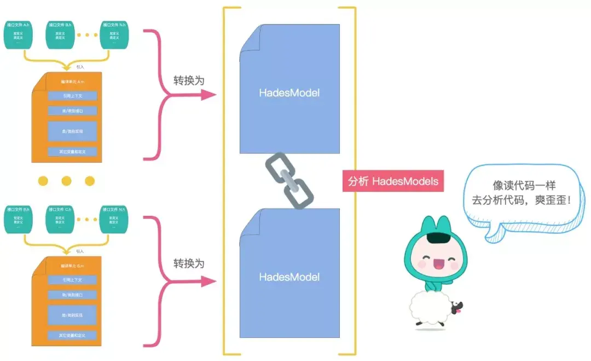

进入2019年，大前端技术生态似乎进入到了一个相对稳定的环境，React在2013年发布至今已经6年时间了，Vue 1.0在2015年发布，至今也有4年时间了。
整个业界在前端框架不断迭代中，也寻找到了许多突破方向，例如跨平台中的RN、Flutter，服务端GraphQL、Serverless，前端和客户端的融合越来越紧密，前端在Node和Electron的加持下，也扩展了自己的版图到服务端和桌面。
同时，随着前端开发越来越复杂，整个前端研发也经历了人工化->工具化->工程化->智能化的演变。目前各个大厂在工程化实践不断迭代，出现了许多Low/No Code等前端智能化解决方案，工程化实践也深入到研发的各个环节，不断提升前端研发的标准化能力。而且，随着机器学习的加入，各类UI2Code的解决方案也开始出现，前端研发进入了一个完全不同的时代。
随着端上能力的不断增强，现在在端上做的事情越来越多。首先，数据可视化方向，各类图表、地图、3D等等数据可视化的尝试变得越来越多。其次，伴随着人工智能的加持，在端上的人工智能应用也变的普及，减少了服务端的交互，提高了系统的实时响应能力。最后，随着Webassembly等技术的应用，有可能将前端运行能力再提升一个档次，可以进行更为复杂的端上计算。
为了了解当前前端的发展趋势，让我们从国内各大互联网大厂开始，了解他们的最新动态和未来规划。前面系列已经介绍过了阿里、腾讯、百度、携程的大前端技术体系。
这一篇讲介绍美团点评。
业务介绍

美团点评是一个连接消费者和商家的本地生活平台，在C端涵盖食、住、行、游、购、娱等众多本地生活服务，在B端也不断深入，具备营销、配送、IT、金融、供应链和运营等能力。

美团点评基于餐厅的本地点评和团购业务开始，每年不断扩展新的业务，丰富业务品类增强用户粘度，逐步成长为一个本地生活服务的超级平台。
从业务方面主要包含以下几个部分：
- 到家业务：餐饮外卖，配送
- 到店业务：到店餐饮，酒店，旅游，到店综合业务
- 新业务：生鲜超市，交通票务（飞机、火车、汽车、轮船等），共享单车，网约车
- 商家业务：营销，及时配送，云端ERP系统，聚合支付收单，供应链，金融贷款
大前端技术全景

美团点评在多业务、多容器、多端上都有非常丰富的业务场景，于是在大前端领域沉淀了众多的解决方案和框架。上图是根据现有公开资料整理而成的技术全景图，大体上能够体现在大前端方面的积累，当然这可能仅仅是公司现有能力的冰山一角。
在技术推广和宣传方面，美团点评也是不遗余力，目前有几个很好的途径可以了解：
后面我会就各个部分进行展开的介绍，文末会有福利附上大量参考资料。
工程化
MCI - 客户端持续集成
MCI是美团点评客户端持续集成平台，在客户端功能越来越强大、代码库越来越大、参与团队越来越多，不可避免会导致客户端持续集成面临几大挑战：
- 依赖模块复杂
- 研发流程繁琐
- 构建速度慢
- App出包质量差

MCI架构体系包含移动CI平台、流程自动化建设、静态检查体系、日志监控&分析、信息管理配置，另外MCI还采取二进制集成等措施来提升MCI的构建速度。
MCI实现了客户端持续集成的平台统一，极大提高了研发效率和保证客户端质量，实现了研发流程的自动化，提升了打包的速度与效率，同时也配备了诸如包体积大小、代码质量检测等能力。
详细可以查看参考资料[1]。
CAT - 全端监控平台
CAT（Central Application Tracking），是美团点评基于 Java 开发的一套开源的分布式实时监控系统。美团点评基础架构部希望在基础存储、高性能通信、大规模在线访问、服务治理、实时监控、容器化及集群智能调度等领域提供业界领先的、统一的解决方案，CAT 目前在美团点评的产品定位是应用层的统一监控组件，在中间件（RPC、数据库、缓存、MQ 等）框架中得到广泛应用，为各业务线提供系统的性能指标、健康状况、实时告警等服务。
CAT从开发至今，一直秉承着简单的架构就是最好的架构原则，主要分为三个模块：CAT-client、CAT-consumer、CAT-home。
- Cat-client 提供给业务以及中间层埋点的底层SDK。
- Cat-consumer 用于实时分析从客户端提供的数据。
- Cat-home 作为用户给用户提供展示的控制端。

CAT项目从2011年开始做，到现在整个生产环境大概有三千应用，监控的服务端从零到几千，再到今天的两万多的规模，整个项目是从历时看起来是一个五年多的项目，但即使是做了五年多的这样一个项目，目前还有很多的需求需要开发。
详细可以查看参考资料[2][3]。
Logan - 移动端集成日志库
Logan是美团点评集团移动端基础日志组件，这个名称是Log和An的组合，代表个体日志服务。同时Logan也是“金刚狼”大叔的名号，当然我们更希望这个产品能像金刚狼大叔一样“犀利”。Logan已经稳定迭代了一年多的时间。目前美团点评绝大多数App已经接入并使用Logan进行日志收集、上传、分析。
目前存储SDK部分已经开源，GitHub的项目地址参见：github.com/Meituan-Dia… 。
在移动App中，最担心的场景就是无法还原用户的错误场景，通过散落在各处的日志无法完整的追溯用户的操作情况，导致线上问题处理不及时甚至无法重现。
Logan框架就是一个移动端基础日志组件，能够通过自动/手动方式来收集完整的用户日志信息，并且通过友好、聚合的前端系统形式来展现，帮助开发者快速定位问题。

Logan其核心体系由四大模块构成：
- 日志输入：代码级日志、网络日志、用户行为日志、崩溃日志、H5日志等。
- 日志存储：Logan自研的日志协议解决了日志本地聚合存储的问题，采用“先压缩再加密”的顺序，使用流式的加密和压缩，避免了CPU峰值，同时减少了CPU使用。
- 后端系统：后端是接收和处理数据中心，相当于Logan的大脑。主要有四个功能：接收日志、日志解析归档、日志分析、数据平台。
- 前端系统：研发人员通过Logan前端系统搜索日志，进入日志详情页查看具体内容，从而定位问题，解决问题。具备了数据可视化、筛选、过滤、搜索、分享等功能。
详细可以查看参考资料[4]
ERA - 全栈前端框架

前端开发涉及创建项目、框架选型、业务逻辑、配置打点、收集日志、构建测试、申请服务、上线检查等一系列环节，在各个环节中又有大量的技术选型，这样不断耗费开发同学的精力，同时也很难做到技术栈的统一和标准化，进而缺乏技术沉淀，每次新项目开发都需要从零开始。
ERA提供了一整套前端工程化能力，目的是在项目开发流程中进行适当的收敛，同时又通过插件方式提供了足够定制化的能力。
- 初始化项目：可以通过插件方式集成集团基础的标准服务生成初始化的标准项目模板，同时也提供基于不同业务场景的项目模板
- 开发调试：基于插件方式可以快速集成各类服务，例如ABTest、Proxy、Mock、PWA等等，可以帮助业务开发同学快速进行业务逻辑代码编写
- 编译配置：基于Webpack，并且内置了babel/eslint的最佳实践
- 部署发布：可以实现Node服务和纯静态前端的发布
代码质量
ESLint

为了能在团队内实现 JavaScript 代码规范的统一，在分析和思考团队规模化应用存在的问题后，我们设计了一套完整的技术解决方案。该方案包括多场景统一的 ESLint 规则配置、代码集成交付检查、自动化接入工具、执行状况监测分析等四个模块。通过各个模块协调配合，共同解决上文提出的问题，在降低维护成本、提升执行效率的同时，也保障了代码规范的统一。
-
多场景统一的 JavaScript 规范：该模块是整个方案的核心，借助 ESLint 的特性，通过分层分类的结构设计，在保证基础规则一致性的同时，实现了对不同场景、技术选型的支撑。
-
代码集成交付检查：该模块是方案落地执行的保障，将代码静态检查集成到持续交付工作流中。具体设计实现上，在保证交付质量的同时，也通过定制集成检查工具降低了开发者的应用执行成本。
-
自动化接入和升级方案：通过命令行工具提供“一键”接入/升级能力，同时集成到团队脚手架中，大大降低了工程接入和维护的成本。
-
执行状况监测分析：通过对工具运行和代码集成交付检查过程进行埋点、检查结果收集和分析，了解方案的应用状态和效果。
详细可以查看参考资料[5]
Hades - 移动端静态分析
按照 Hades 的架构目标进行基础方案选型以后，我们来看下 Hades 的整体技术框架，可以用下图所示的四层架构表示：

下面简述下这几层的不同职责。
-
编译器架构层。Clang 的诸多优势前文已经提到，这也是 Hades 的基础依赖。
-
Hades 核心层。在编译器架构层，我们借助 Clang 得到了代码的抽象语法结构表示 AST。而 Hades 核心层的职责便是将 AST 解析成人们更容易理解的，更高层级的语义模型。
-
Hades 接口封装层。抽象出的模型，能够像 Clang 提供丰富 AST 访问接口那样，为开发者提供丰富的模型访问接口。
-
静态分析应用。通过 Hades 接口封装，我们无需清楚底层模型是如何生成的，在这一层我们可以制作 Lint 或者其它监控、分析工具。

不同于传统的Clang API或者OCLint，HadesModel 是基于 AST 的更高层级语义表达，它能够序列化为 JSON 格式并描述完整的编译单元，这种结构化信息使得静态分析能更接近于开发者阅读理解源码的思维习惯。
Hades 作为大众点评移动研发的基础设施之一，在实践中得到了广泛的应用，为大型 App 项目的日常维护、代码分析提供支持。基于 HadesModel 的静态分析易上手，开发接入成本低，能够理解代码语义，具备全局分析能力等诸多优点。
详细可以查看参考资料[6]
参考资料
[1]MCI-大众点评千人移动研发团队怎样做持续集成？：mp.weixin.qq.com/s/XY3u-bMgs…
[2]开源实时监控系统CAT 3.0发布：mp.weixin.qq.com/s/9uePYJpVE…
[3]深度剖析开源分布式监控CAT：tech.meituan.com/2018/11/01/…
[4]Logan-美团点评的开源移动端基础日志库：mp.weixin.qq.com/s/XM4bhncHz…
[5]ESLint 在中大型团队的应用实践：mp.weixin.qq.com/s/jb8yozm-p…
[6]Hades-移动端静态分析框架：mp.weixin.qq.com/s/CwKtLnxMW…
写在最后
这是美团点评大前端技术体系解密的上篇，主要介绍了工程化和代码质量相关的沉淀，当然这些仅仅基于公开资料整理而成，仅仅是整个技术体系的冰山一角。
最后，美团点评上海、北京都在大量招前端资深/专家工程师，如果有兴趣近距离接触美团点评大前端技术框架，欢迎私信给我进行内推。
推荐阅读
『奶爸码农』从事互联网研发工作10+年，经历IBM、SAP、陆金所、携程等国内外IT公司，目前在美团负责餐饮相关大前端技术团队，定期分享关于大前端技术、投资理财、个人成长的思考与总结。